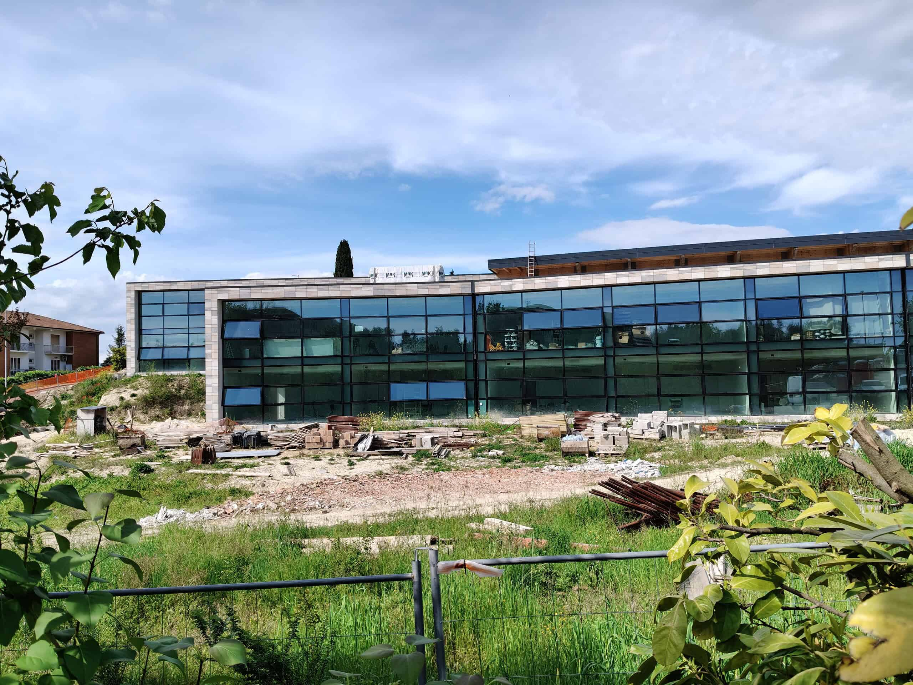
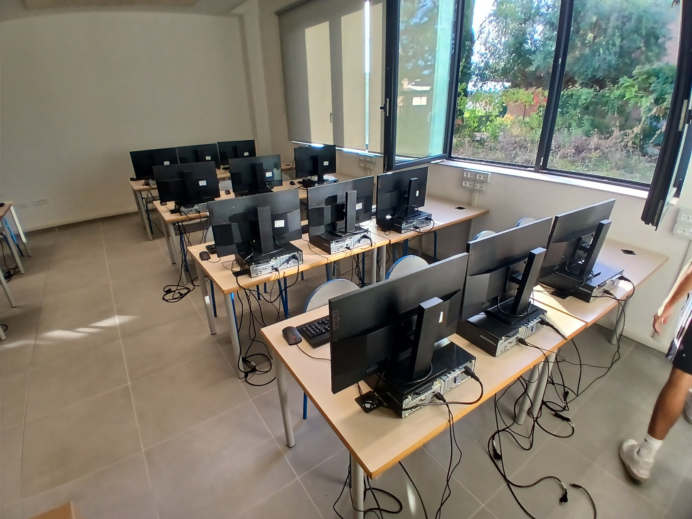

Durante il quarto anno ho affrontato l'esperienza di Formazione e Scuola Lavoro (ex PCTO) con un progetto intitolato "Tecnici per un giorno". La cosa bella è stata poterlo fare insieme a un mio compagno di classe. Curioso il luogo dove si è svolta l’attività: quando si pensa all’ITIS Informatica ci si immagina le aziende alla ricerca dei ragazzi, invece siamo stati mandati alla scuola media "Carlo Lorenzini" di Jesi.

Fin dal primo giorno non ci siamo trovati davanti a compiti teorici o simulazioni, ma a una situazione vera, caotica e stimolante. L'obiettivo era rimettere in sesto, gestire e far funzionare il laboratorio di informatica che professori e ragazzi delle medie usano tutti i giorni. È stata un'occasione unica per prendere le cose studiate sui libri all'ITIS e vedere l'effetto che fanno quando le applichi sul campo, ma soprattutto ci ha insegnato tantissimo sul piano dei rapporti umani, molto oltre i programmi scolastici.

Le Soft Skills sviluppate: la crescita personale e il valore dell'esperienza
Fondere la teoria con la pratica ci ha costretto a crescere tantissimo, soprattutto a livello umano. Se devo pensare alla competenza trasversale più importante che mi sono portato a casa, è senza dubbio la comunicazione efficace. Lavorare in una scuola media mi ha insegnato l'importanza di saper parlare con utenti non tecnici. Spiegare un problema di rete o il funzionamento di un software a un professore in difficoltà o a un ragazzo delle medie ti costringe a eliminare il gergo difficile e a tradurre concetti complessi in un linguaggio semplice, chiaro e accessibile a chiunque.
Oltre alla comunicazione, l'esperienza ha testato la mia autonomia. Spesso dovevamo gestire le attività da soli, prendendo l'iniziativa per risolvere i guasti improvvisi senza una supervisione costante. E poi c'è stato il valore del lavoro in team con Francesco: collaborare strettamente, dividerci i compiti e supportarci nei momenti in cui le richieste di assistenza si accumulavano ci ha insegnato cosa significa la responsabilità condivisa e il rispetto delle scadenze.
In conclusione, questa esperienza è stata preziosa perché mi ha fatto testare fuori dall'aula quanto possano essere utili le mie qualità in un contesto lavorativo reale. Mi ha dato un metodo: la capacità di applicare la logica analitica dell'informatica non solo alle macchine, ma anche alle relazioni umane.
Consapevolezza digitale: le nostre guide per la scuola
Oltre alla manutenzione tecnica, un'attività centrale del nostro percorso è stata la creazione di vere e proprie guide informative destinate agli studenti e al personale delle medie, per promuovere un utilizzo consapevole di Internet e degli strumenti informatici.
In queste guide abbiamo affrontato temi pratici ma fondamentali per la sicurezza quotidiana. Abbiamo spiegato l'importanza di organizzare correttamente i propri file all'interno dello spazio Cloud di Google, ma soprattutto abbiamo insistito sulle buone pratiche di cybersecurity a livello personale, come l'obbligo di disconnettere sempre il proprio account Google quando si utilizzano computer in comune. Nelle scuole medie, infatti, i PC del laboratorio vengono scambiati continuamente tra classi diverse: lasciare una sessione aperta significa esporre i propri dati personali, le email e i documenti a chiunque, rischiando violazioni della privacy. Questa attività mi ha fatto capire quanto le competenze informatiche debbano sempre tradursi in responsabilità e divulgazione etica.